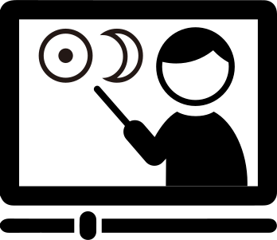

鏡リュウジが占星術を基礎から体系的に教える連続講座。
６ヶ月コース［月2回授業］修了証交付。４期募集！
＊４期では、【Zoom＋リアルコース】のみを開講します。
占星術を本気で学びたいあなたへ
占星術の世界に魅せられてかなりの時間がたちました。10代のころから日本で出ている占星術書ではとうていあきたりず、原書を取り寄せて学びはじめ、大学生になると英国詣でが始まります。
本場である英国の占星術コミュニティでよき師や友に出会えたことは一生の宝。そしてそこで学んだことを自著や翻訳書、メディアを通してお伝えしてきました。最近では各種セミナーなどでもさまざまな角度から ……占星術の技法のみならず占星術の歴史や思想などについても…… その成果をお伝えしています。
その一方で、初歩から占星術の実践を「体系的に」教えて欲しいという声も多く聞かれるようになりました。
正直、僕は“弟子”“門下生”のようなものを作りたくはなかったので、これまでは連続講座は避けて来ました。
これだけ学んできても、僕自身、占星術の世界ではようやくその門をくぐることができたくらいだと感じているからです。
しかしその一方で、たくさんのスクールが生まれている今、僕自身が学んできていることを集約して、ごくオーソドクスかつプラットホームになるような基礎コースを作ってみることもまた価値があるのではないかと考え始めました。そこでスタートさせるのがこのコースです。
目指すのはまったくの初歩から出生ホロスコープを自分で読めるようになるための体系的レッスン。それは現代占星術のエッセンスであり世界のスタンダードにも通じるもの。また講座の中では占星術の哲学や背景の考え方なども散りばめられていくでしょう。
ここで学べば、一流の占星術家になれる、とはお約束しません。しかし、このコースをきちんと修めれば、あなたは立派な占星術学徒、占星術家としての第一歩を踏み出すことができるはずです。そして、その礎石の上に築かれる占星術は必ずやあなたの一生涯の友となるでしょう。
特別講師：鏡リュウジ
NEWS
-
2021.5.28
東京アストロロジー・スクール4期受講のお申込み受付けを開始しました！
4期では、【Zoom＋リアルコース】を開講いたします。※サービス期間、入退会規定等は、よくあるご質問（FAQ）をご覧ください。
仮登録から〜受講までの流れ
- お申し込みの方は、「一括払い」「分割払い」ボタンよりご登録をしてください。
7月７日18時45分〜リアル開催会場にいらっしゃる方は、お申し込みフォーム備考欄に「７月７日リアル参加希望」とお書き添えください。 - 東京アストロロジー・スクール事務局から、「仮登録受付け」のメールが届きます。提出期限内（メールに記載）に「志望動機」（200〜400字程度）を仮登録受付けのメールへの「返信」のかたちでお送りください。
- 志望動機提出後に、受講案内をメールにてお知らせします。メールのご案内にしたがって受講料のお支払い（決済手続き）をしてください。
- 2021年７月より受講開始！
授業の動画を何度でもご覧いただけます
授業内容を動画でアップロードします。弊社サイトにてアップした動画は、ログインすれば、アップ日以降〜2021年12月29日迄何度でもご覧頂けます。いつでもご自分で好きな時間帯に勉強ができるので、お忙しい方でも安心です！
質問は、随時Facebookグループ内で受け付けていますので、安心して授業についてくることができます。
どんな内容？
占星術を基礎からきちんと学ぶために、体系立ててプログラムを作成しています。
全12回の講座要綱はこちらです。
日本の占星術界は、じつは日本独自で発展してきた側面があるのも事実。本スクールでは、グローバルに通用する現代占星術の世界標準の考え方やメソッドを多角的にお伝えしていきます。
本セミナーは、アカデミズムの世界で活躍中の欧米の占星術家が多数所属している、英国占星術協会、オーストラリア占星術連盟など世界の占星術団体の大会などでも発表している鏡リュウジが、古典の文献から最新の占星術学会で学び続けて得た知見をあますことなく伝授致します。
今までになかったチャンスですので、この機会にぜひ受講してください。
こんな方を歓迎します
- スタンダードな西洋占星術の知識を身につけたい
- 基礎からしっかりと学びたい
- 自己を知り充実した人生をおくりたい
- 自分の得意分野、隠れた才能や性格傾向を知りたい
- ホロスコープを読めるようになりたい
すでに西洋占星術を学ばれたことがあるかたへ
本セミナーでは、世界標準の西洋占星術の技法をきっちりと体系的にお教えします。今まで学んだ知識とは違う角度から占星術を学ぶことで、新しい知見を得られ、より一層、占星術の理解が深まるに違いありません。
Zoom＋リアルコース・募集要項
※途中入会、及び、途中退会は原則不可となります。
2021年7月スタート
月２回［12回授業］６ヶ月コース
2021年 日程：月２回水曜日
7月：7日 18:45〜リアル開催(Zoom参加もOK)、21日
8月：11日、25日 9月：8日、22日
10月：6日、20日 11月：10日、24日
12月：8日、22日 18:45〜リアル開催(Zooｍ参加もOK)
◎初回と最終回以外の日程は「19:00〜Zoom開催のみ」となります。
講師：岡本純子
特別講師：鏡リュウジ
岡本純子 Junko Okamoto
あああああ
ああああああああああ
あああああ
あああああ
あああああ
あああああ
鏡リュウジ Ryuji Kagami
占星術研究家・翻訳家。国際基督教大学卒業、同大学院修士課程修了（比較文化）。
占星術の心理学的アプローチを日本に紹介し、従来の「占い」のイメージを一新。
占星術の歴史にも造形が深い。英国占星術協会会員。
日本トランスパーソナル学会理事。平安女学院大学客員教授。京都文教大学客員教授。
主な著書に『鏡リュウジの占星術の教科書Ⅰ』『占星術の文化誌』、
訳書に『ユングと占星術』『魂のコード』『世界史と西洋占星術』
『占星術百科』『占星医術とハーブ学の世界』等多数。
入会金：
5,500円［税込］
授業料：
▼一括支払いコース
全8回 66,000円［税込］
※鏡リュウジのカイロス・ロッジメンバーは全8回 55,000円［税込］
お支払い方法：クレジットカード／paypal／銀行振込
▼月毎支払いコース
17,600円［税込］×4回
※受講前月に翌月分をお支払いいただきます
お支払い方法：クレジットカード／paypal／銀行自動引き落とし（※1）
（※1）サービス提供前月末のお引き落としとなります。銀行自動引き落とし
＊お問合いわせは、よくあるご質問（FAQ）をご覧のうえ、お問い合わせください。
占いライティング実践コース
講義概要
第1回 特別講座
特別講座「占いライティングの歴史」1時間 講師：鏡リュウジ
占いライターとは？ どんな技術を求められるのか？30分 講師：岡本純子
第2回 全体運を書く① 日運
- 運勢を書くときの基礎知識
→運勢を書く心構えとどういう点に注意して書くのか - 対象は？ 文字数は？ 媒体は？ 良いことと悪いことの比率は？
- 悪いことを書く場合のフォローの仕方は？
→文章のテクニック
- 占い調の文章の特徴について
- 「〜の予感」「〜の暗示」といった独特な語彙について
- 断定を避ける方法「〜でしょう」「〜かも」など
- どういう書き出しから始めるか
- 日運、週運、月運、年運を書くときの基礎知識。どの星を見て占うのか
第3回 全体運を書く② 月運と週運
- 前回の復習：提出された宿題を例に説明しながら
- 月運を書いてみよう
→月運を書くときのポイント説明
→月運の例を見てみよう（実例分析）
→実際に月運を書いてみよう（ワーク形式） - 週運を書いてみよう
→週運を書くときのポイント説明
→週運の例を見てみよう（実例分析）
第4回 全体運を書く③ 年運
- 前回の復習：提出された宿題を例に説明しながら
- 年運を書いてみよう
→年運を書くときのポイント説明
→年運の例を見てみよう（実例分析） - 年運のバリエーション
→上半期、下半期ごとの運勢の書き分け
→「テーマ」に合わせた書き方
第5回 恋愛運を書く
- 恋愛運を書くときの基礎知識
→どの星を見て占うか
→どういう点に注意して書くのか - 恋愛運のかき分け方
→片想いの人、フリーの人、カップルの人 - 恋愛運を書いてみよう
第6回 対人運、仕事運を書く
- 対人運を書くときの基礎知識
→どの星を見て占うか
→どういう点に注意して書くのか - 対人運を書いてみよう
→対人運の例を見てみよう（実例分析） - 仕事運を書くときの基礎知識
→どの星を見て占うか
→どういう点に注意して書くのか - 仕事運を書いてみよう
→仕事運の例を見てみよう（実例分析）
第7回 健康運を書く
- 前回の復習：提出された宿題を例に説明しながら
- 健康運を書くときの基礎知識
→どの星を見て占うか
→どういう点に注意して書くのか - 健康運を書いてみよう
→健康運の例を見てみよう（実例分析） - 今までの総復習
- 最終課題を出す
→2021年11月の運勢 全体運、恋愛運、対人運、仕事運、健康運
→期限までに提出。全員添削して戻す
第8回 講評
鏡リュウジ氏を招いて講評
- 最終課題で提出されたものをいくつかピックアップして、鏡さんと共に講評
- まとめ